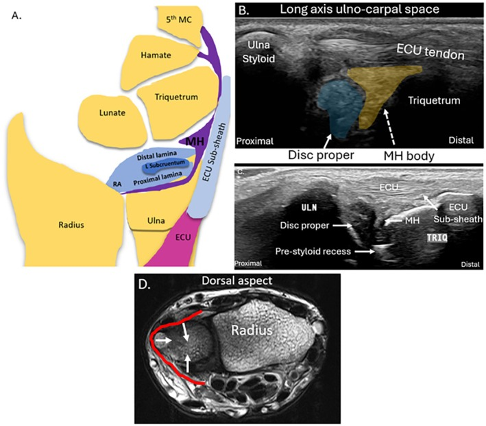

Respuesta clínica corta
¿Qué partes del complejo fibrocartílago triangular son visibles?
El disco periférico, homólogo meniscal, vaina del extensor cubital y ligamentos radiocubitales pueden orientarse; la inserción foveal profunda es más limitada.
Dato claveAtlas anatómico · límites de visibilidad explícitos
La ecografía puede mostrar componentes periféricos del complejo fibrocartílago triangular y su relación dinámica, pero la porción profunda de la inserción foveal puede permanecer fuera de alcance.
Observado
Qué encontró y cómo interpretarlo
La revisión diferencia con honestidad estructuras visibles y no visibles.
La correlación anatómica no valida el diagnóstico ecográfico de desgarro.
Atlas del artículo
Imágenes para entender el procedimiento
Estas figuras proceden del artículo original y se reproducen con licencia abierta verificada. Se muestran por su utilidad anatómica o técnica, no como prueba aislada de diagnóstico o eficacia.

La figura relaciona la extensión del disco con su aspecto ecográfico y muestra por qué la inserción foveal profunda es difícil de separar.
Cómo leerlaLa correlación anatómica de una figura no establece precisión para diagnosticar desgarros ni sustituye artroscopia o resonancia.
Winnett y Fenech, Figura 5 del artículo original · Fuente · Licencia CC BY.
Procedimiento del artículo
Ventanas ecográficas del complejo fibrocartílago triangular
La exploración combina una ventana dorsal ulnocarpiana con seguimiento del extensor cubital y movimientos de pronosupinación para distinguir componentes y límites.
- Ventana
- Dorsal y cubital de la muñeca
- Dinámica
- Pronosupinación y desviación controlada
- Límite
- Inserción foveal profunda
- 01
Orientar el espacio ulnocarpiano
Colocar el transductor longitudinal sobre la estiloides cubital y el triquetrum.
- Referencias
- Cúbito, estiloides, triquetrum y tendón extensor cubital.
- Lectura
- El espacio permite separar disco y homólogo meniscal.
- 02
Seguir el extensor cubital
Explorar su vaina y relación con los componentes dorsales en dos planos.
- Referencias
- Tendón ECU, subsheath y ligamento radiocubital dorsal.
- Lectura
- La dinámica puede mostrar estabilidad, no necesariamente lesión del disco.
- 03
Evaluar la articulación distal
Añadir pronación y supinación suaves manteniendo radio y cúbito visibles.
- Referencias
- Articulación radiocubital distal y ligamentos.
- Lectura
- La congruencia dinámica debe interpretarse con síntomas y otras modalidades.
Protocolo reconstruido de forma prudente desde el texto completo y las figuras del artículo; sirve para comprender la adquisición y no sustituye formación, supervisión ni un proceso diagnóstico completo.
Aplicabilidad
Qué significa clínicamente
Usar la ecografía para anatomía periférica y dinámica.
Escalar a otras pruebas cuando la pregunta sea profunda o intraarticular.
Límite
Qué no permite afirmar
Revisión pictórica.
Sin muestra diagnóstica.
Sin fiabilidad entre operadores.
Contexto
¿Se parece a tu paciente?
- Población estudiada
- Imágenes anatómicas, ecográficas y de resonancia del complejo fibrocartílago triangular; sin cohorte de precisión diagnóstica.
- Diseño
- Revisión anatómica y pictórica
- Resultado evaluado
- Trazabilidad anatómica del disco y estructuras periféricas
Fuente primaria
Lee el estudio, no solo nuestro análisis
Winnett C, Fenech M. Sonographic Anatomy and Imaging of the Triangular Fibrocartilage Complex and the Distal Radio-Ulnar Joint. Australas J Ultrasound Med. 2025;28(3):e70012. doi: 10.1002/ajum.70012
Responsabilidad editorial
Francisco José Extremera García
Fisioterapeuta colegiado ICPFA 4288 · Osteópata D.O.
Creador y responsable editorial de FisioLógico
- Última revisión
- Conflictos de interés
- Ninguno declarado.